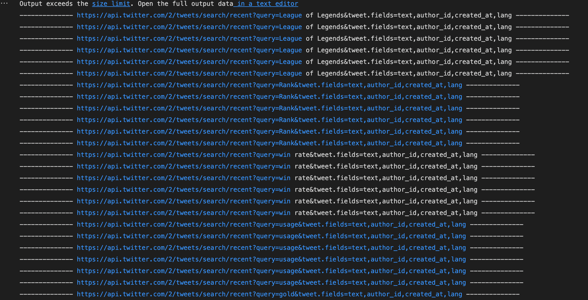

In order to create wordclouds in the future, I utilize the API in Rstudio to scratch the phrase "League of legends." I also use this dataset to get a variety of knowledge about the game.
To obtain all relevant information from Twitter regarding LOL, I utilize the twitter API to scratch many keywords such as League of Legends, Rank, victory rate, use, and KDA. I'll utilize this information to evaluate the situation around these words and learn more about it in order to more easily make a future forecast. In order to create thorough datasets, I also use a for loop to scan through more than 600 tweets. In order to ensure that my findings are correct, I will continue to gather additional information and scratch over 2,000 tweets.
This data inludes before the game began (df pre start): summoners spells, draft, and banns. During the game, the major goals are (drakes, towers, inibs, barons, and heralds). The longer the game lasts, the more probable it is that we will be able to determine the winner. It would be highly fascinating, but also very challenging, to be able to predict the winner using just the df pre start data. The data may be used to determine which objectives have the most effect on the games, which is more interesting than using df post start to predict the winner. I'll proceed from little to huge since this is a test, to assure substance.